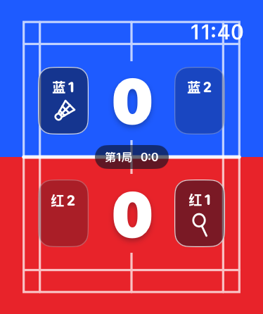
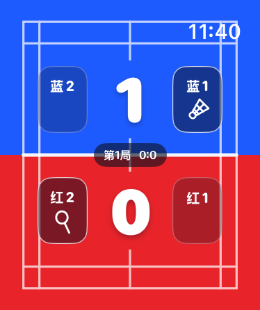
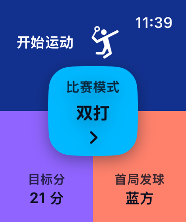
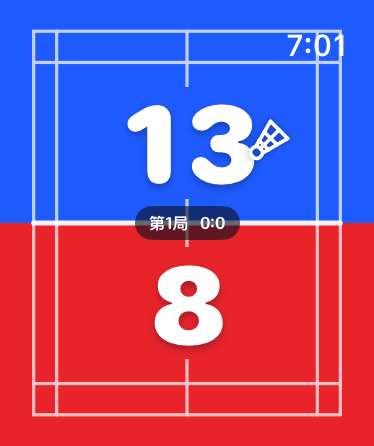
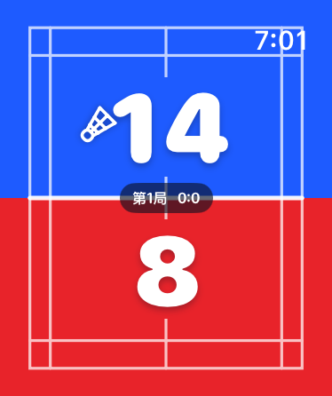
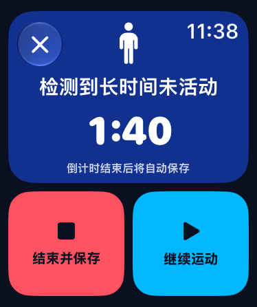
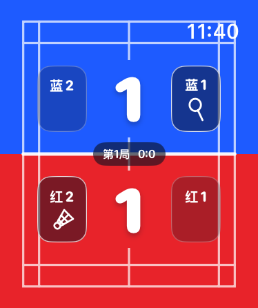

01
一眼开赛。
选择单打或双打、目标分和首局发球方。关键设置集中在一屏，球场边也能快速开始。


向下探索
比赛，而不是操作。

01
选择单打或双打、目标分和首局发球方。关键设置集中在一屏，球场边也能快速开始。
02
在对应半场上滑加分、下滑撤回。大比分、强对比，运动中也能清楚看见。
03
双打模式会根据得分和发球权更新四人站位。羽毛球标记发球者，球拍标记接发球者。
04
比赛时间、实时心率和活动能量集中展示。结束后保存比分，并将运动记录交给 Apple 健康体系。
为运动而生的手势
没有拥挤的小按钮。整片半场就是你的操作区域。


懂得何时提醒
长时间没有活动时主动提醒；没有回应，则自动结束并保存本次比赛。

双打，不再靠脑补
发球、接发、左右站位随比分变化。把容易出错的规则，变成一眼就懂的球场。

RallyWrist
专为 Apple Watch 打造的羽毛球计分与运动记录体验。